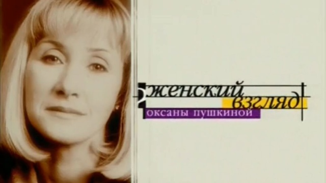

Подбирается ко мне неслышно
Одиночествo .
Потому что тебя рядом нет,
А к тебе хочется!
Ведь по Зоне ходим мы
Разделённые.
Потому что для людей –
Прокажённые.
Радиационным фоном мы
Помечены,
В тёмно-красном мареве выброса
Повенчаны.
И с мутантами мы боремся,
Усталые.
Словно бабочки зимой
Запоздалые.
В аномалии влетаем
Нечаянно,
Потому что рождены мы
Отчаянными.
А зовёмся мы с тобою
Сталкерами.
Ещё встретимся хоть раз мы?
Едва ли…
Нас с тобой связала Зона,
Эту связь не разорвать.
Пусть по мне почти не видно,
Но мне жаль тебя терять.
Столько мечт, надежд, желаний!
. Неужели всё прошло?
За одну лишь ночь порошей,
Белым снегом занесло.
Я стою – одна средь Зоны,
И меня ты не найдёшь.
Помнишь, звал ты идеалом,
Говорил, что любишь, ждёшь?
Неужели эти фразы
Просто звуки для тебя?
Неужели просто лгал ты,
Говоря, что я – твоя?
Пусть мне больно, пусть я плачу,
Всё равно в сердце живёт
То, что Зона в нас вселила.
Так пусть это не пройдёт.
Тяжело здесь дышит грудь!
Открываясь перед нами,
Зона стелется холмами,
Нам показывая путь.
Воздух Зоны не вдохнуть,
Он так холоден, отравлен,
Радиацией приправлен.
Этой ночью не уснуть.
Над землею – лунный путь.
Одиноко мне и пусто,
С артефактами лишь густо.
. Ничего, я как-нибудь.
За спиной рюкзак набитый,
На плече висит Винтарь.
Возвращаюсь я с охоты
И иду домой, как встарь.
Где-то там моя лачужка
У завалов близ ЧАЭС.
Кто-то скажет: вот больная!
Ничего, живу я здесь.
Кто-то виснет на болоте –
Не похожа на таких.
На меня вы посмотрите.
Разве я какой-то псих?
Уложу Винтарь в трофеи
И достану СВД.
Моя милая винтовка,
Что спасёт в любой беде.
Вставлю новую обойму
В Абакан такой родной.
Не забудь меня ты, Сталкер!
Возвращайся, будь со мной.